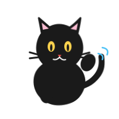

从样地到结论：保护生物学数据实战
基于 R 语言的生物实验设计与统计分析
从样地到结论
保护生物学数据实战 · 基于 R 语言

喵～我是黑豹，
接下来 22 章的统计冒险，
我陪你一起走。
接下来 22 章的统计冒险，
我陪你一起走。
第一篇 · 进入统计
- 研究问题
- 变量类型
- 实验设计
第二篇 · 看懂数据
- 数据管理
- 描述统计
- 可视化
第三篇 · 回答问题
- t 检验 / ANOVA
- 卡方检验
- 相关 / 回归 / GLM
第四篇 · 专业应用
- 森林 / 野生动物
- 生物多样性
- 措施评估
第五篇 · 现代生态统计
- 混合模型
- 贝叶斯
- 时空 / AI 学习
欢迎
本书是一本面向野生动物保护、森林保护、植物保护、林学与生物多样性专业学生的案例驱动统计教材。
这本书是什么
- 保护问题先行：每章从一个真实的保护生物学问题出发
- 统计判断为核心：重点不是背公式，而是”这个问题该用什么方法”
- R 语言实操：所有分析代码可运行、可复现
- AI 辅助但不依赖：教你用 AI 帮忙，同时教你检查 AI 的对错
如何使用
- 学生：按章节顺序阅读，完成每章练习和 AI 核查任务
- 教师：根据课时需求选取章节，每个案例可独立教学
- 保护工作者：按专业方向或问题类型查找所需方法